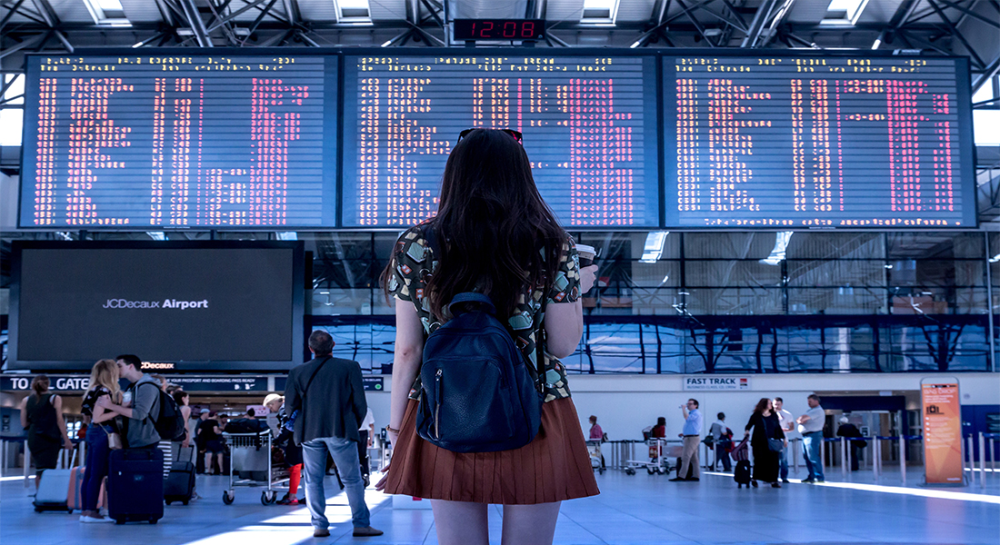

Kako putovati sigurno i udobno
Putnički savjeti su ključni za sigurno i ugodno putovanje, bez obzira na destinaciju ili način prevoza. Savjeti za putovanje avionom pomažu da let prođe što bezbrižnije – od pravovremene registracije, pakovanja ručnog prtljaga sa najpotrebnijim stvarima, do saveta o izboru sedišta. Putnici često zanemaruju važnost fleksibilnog plana i planiranja unapred, što može umnogome smanjiti stres i neugodne situacije tokom putovanja.
Kako spakovati kofer je još jedan od bitnih putničkih savjeta. Preporučuje se pravljenje liste stvari koje su neophodne, od odeće do ličnih dokumenata i lekova. Efikasno pakovanje štedi prostor i olakšava transport prtljaga. Za duže letove, preporučuje se i pakovanje osnovnih stvari u ručni prtljag, kao što su rezervna odeća i osnovni higijenski proizvodi.
Putno osiguranje je nezaobilazni savet za sigurno putovanje. Ono pokriva nepredviđene situacije kao što su odlaganje letova, gubitak prtljaga ili hitni medicinski troškovi. Putnici koji planiraju putovanje sa djecom posebno treba da se fokusiraju na sigurnost, adekvatan prtljag, aktivnosti tokom leta i planiranje odmora koji odgovara svim članovima porodice.
Sigurno putovanje uključuje i pripremu za različite vremenske prilike, pravila lokalnih propisa i kulturne običaje destinacije. Putnički savjeti naglašavaju važnost planiranja, ali i fleksibilnosti – spremnost da promenite planove u slučaju neočekivanih situacija može u velikoj meri unaprediti iskustvo putovanja.
Na kraju, putnički savjeti takođe uključuju i racionalno trošenje budžeta, pronalaženje povoljnog smeštaja i korišćenje javnog prevoza. Kombinacija ovih savjeta omogućava da putovanje bude prijatno, sigurno i nezaboravno. Sa adekvatnom pripremom, svaki putnik može da maksimalno iskoristi svoje vreme, uživa u destinaciji i stvori uspomene koje će dugo pamtiti.